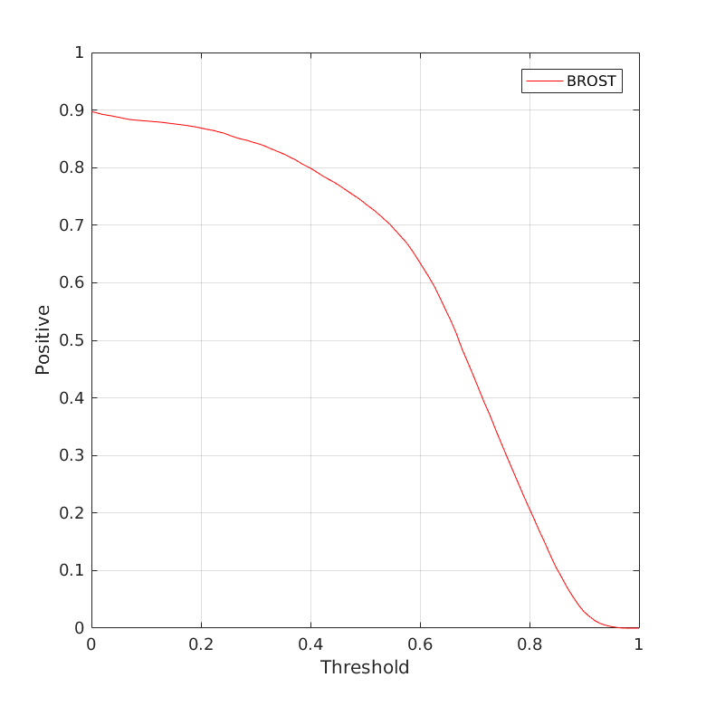
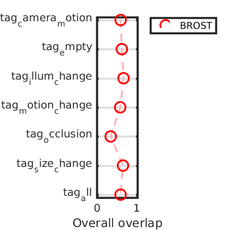
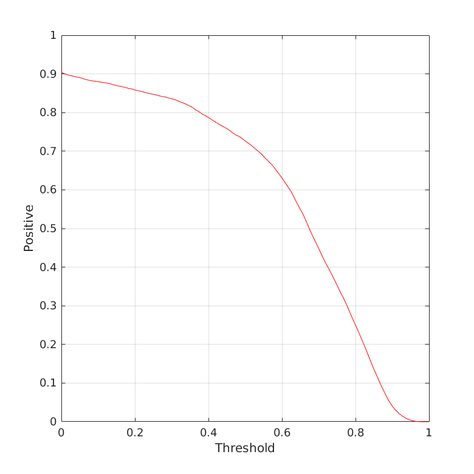
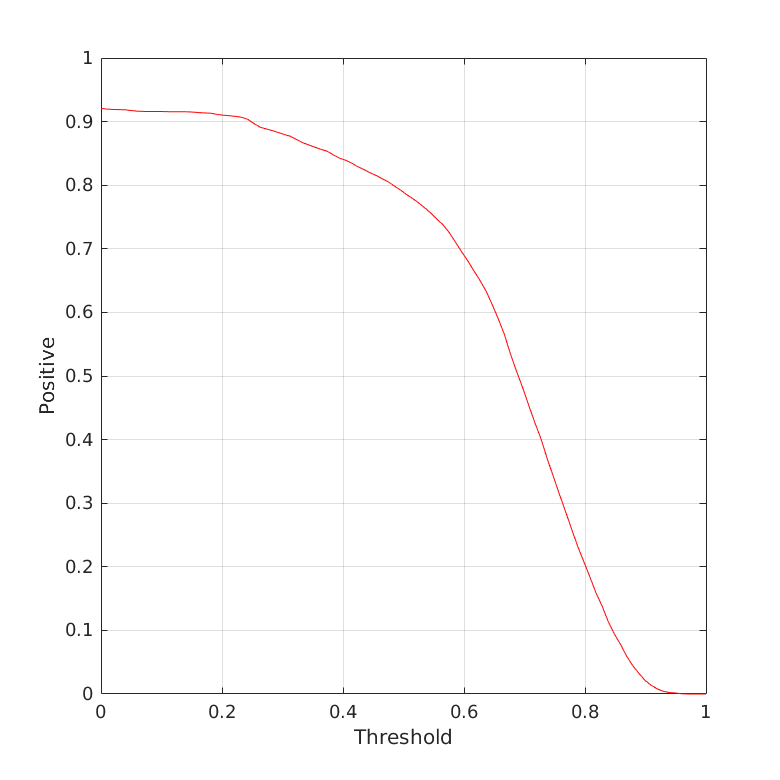
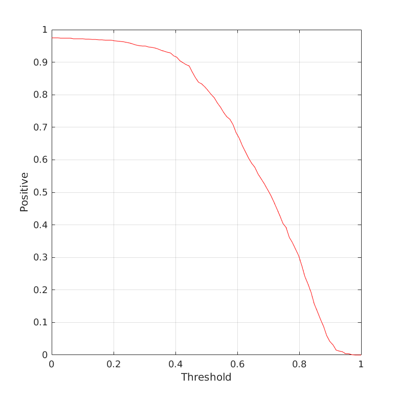
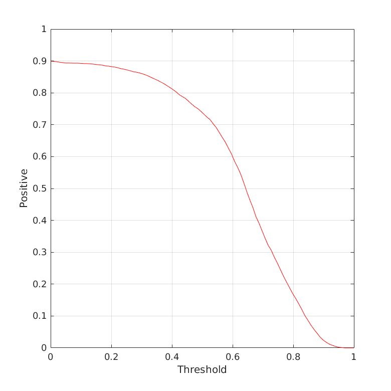
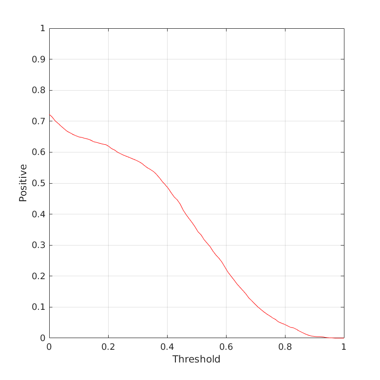
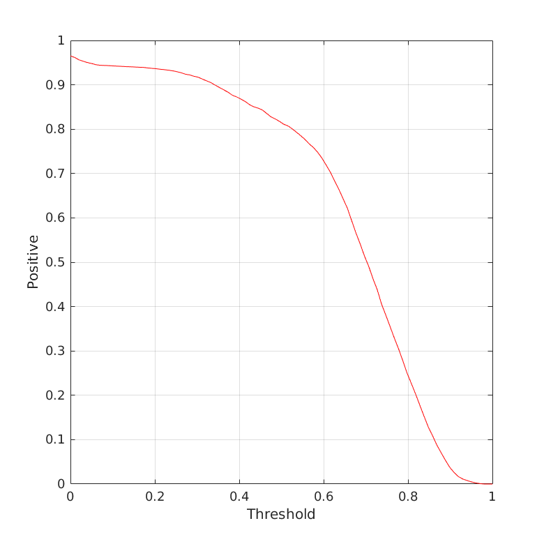

Overlap
Experiment unsupervised

Experiment unsupervised (average)
Overlap overview
| | tag_camera_motion | tag_empty | tag_illum_change | tag_motion_change | tag_occlusion | tag_size_change | tag_all |
|---|
| BROST | 0.5451 | 0.4479 | 0.5484 | 0.5205 | 0.3302 | 0.5646 | 0.4951 |
|---|
Detailed plots

Orderings for overall overlap

Overlap plot for tag tag_camera_motion in experiment unsupervised

Overlap plot for tag tag_empty in experiment unsupervised

Overlap plot for tag tag_illum_change in experiment unsupervised

Overlap plot for tag tag_motion_change in experiment unsupervised

Overlap plot for tag tag_occlusion in experiment unsupervised

Overlap plot for tag tag_size_change in experiment unsupervised